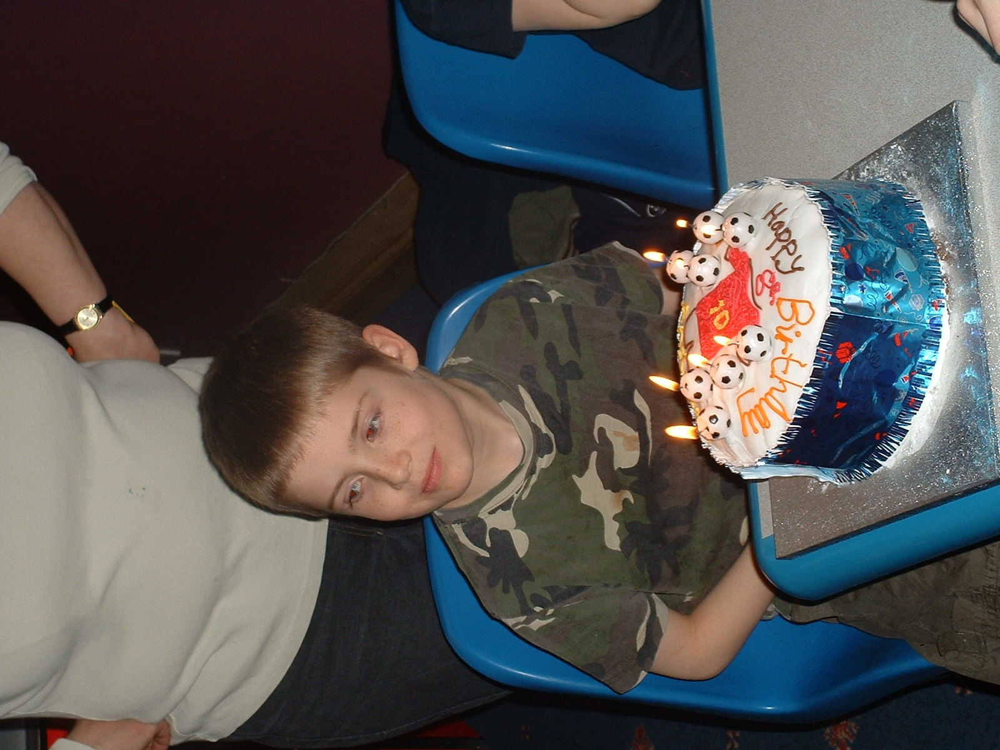

I am an 18 year old college student. Studying at Long Road sixth form college. The subjects I am currently studying are:
This is a picture of me at my eight birthday party. Where I took some of my friends to the local bowling alley. It is a picture of the cake I had that day. 
Currently I have a dog and two cats. This video shows that there is no arguments bewteen them even with food.
Since the age of 14 I have been playing rugby. Currently I am playing for the Haverhill rugby clubs mens team